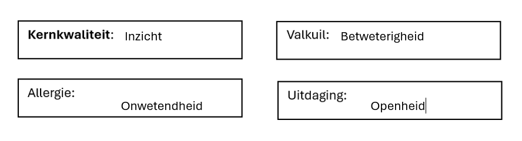
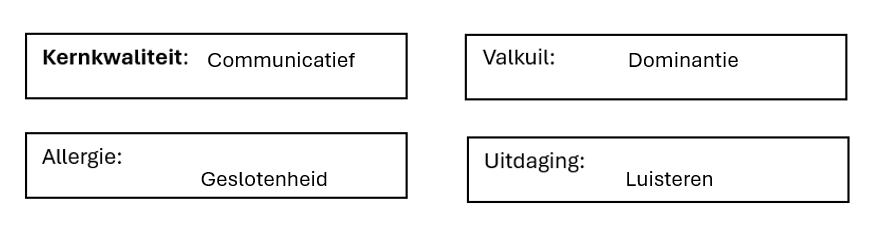

AIM-reflectie op WPL1
Intro Bij WPL1 draaide het vooral om kennis te maken met de verschillende programma's die worden gebruikt bij een werkplek in verband met programmeren. We leerden C# gebruiken, HTML en CSS en Git/Github. Daarnaast werd er ook tijd genomen voor POP-onderdelen om onze soft-skills te kunnen beoordelen |
|
|
|
Wat vond je een bijzonder positief element van Werkplekleren 1? De scratch-opdracht in het begin van WPL1, We hadden op dit moment nog niet veel kennis over C#, maar door deze opdracht kon je wel al kennis maken met het programmeren van een spel. Je maakte zo kennis met de programmeerlogica. |

|
Wat vond je een minder leuk element van Werkplekleren 1? Voor mij was dit de manier waarop deze werden opgesteld. Ik weet wel dat dit de makkelijkste manier is om een PE op te stellen, via de ReadMe in een git. maar om op een klein scherm constant te moeten switchen van git naar visualstudio |

|
Welke nieuwe inzichten neem je mee uit Werkplekleren 1? 1 inzicht dat ik zeker gehad heb is een persoonlijk inzicht. Ik kan namelijk met alle onderdelen goed aan de slag en weet wat ik moet doen. Maar ik zou het veel sneller kunnen doen. Vooral met onderdelen ivm HTML/CSS heb ik vaak tijdsnood. En daar moet ik aan werken voor WPL2. |

|
Wat zou je een persoonlijk succes noemen tijdens Werkplekleren 1? Waarop ben je trots? De punten, tijdens WPL1 heb ik tot nog toe geen enkele onvoldoende. Dit toont in mijn ogen wel aan, dat ik het kan. Verbetering is zeker nog mogelijk, maar het gaat al in de goede richting. |
Wat neem ik mee naar volgende WPL
Ik kan vlot verbanden leggen en zo problemen oplossen. Dit is een goede eigenschap voor een programmeur om de logica achter code te zien en toe te passen, maar anderzijds ook om snel een probleem te vinden en op te lossen. Zeker iets om verder mee te nemen naar WPL2, wel opletten dat ik niet overga in de valkuil van betweterigheid.
Ik zou mijzelf bij communicatie moeilijker plaatsen. Op veel momenten is het een sterkte van mij. Maar af en toe durf ik wel wat dominant worden in gesprekken of juist gesloten. Dit is wel iets dat ik wil meenemen naar WPL2 om hier nog meeer op te letten.
X factor

Taken binnen de X-factor |
|
(Em)passie
|
Ondernemend/Innovatief
|
Multi- en Disciplinariteit
|
(Internationaal) Samen(net)werken
|